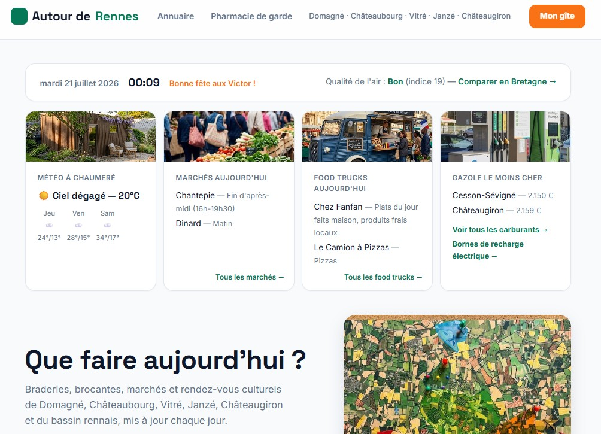
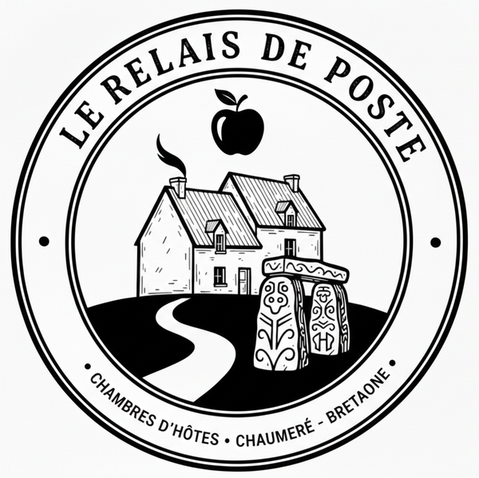
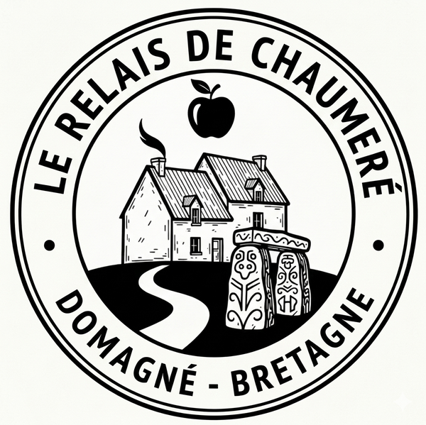

🚧 Projet en cours : Le gîte est actuellement en construction 🚧
📸 Suivez son avancement sur notre blog !
📅 Ouverture en 2027 : Accessible en location meublée flexible début 2027 puis en séjour touristique d'ici l'été.
🗺️ Découvrez déjà les guides et activités locales.
Le Blog du Studio
Découvrez la vie au gite, les actualités de Domagné ainsi que nos éco-conseils.
De mes clients à tout le village : la naissance de l'A3PC
Première étape : aider mes clients.
Quand on arrive dans une région qu'on ne connaît pas, il n'est pas facile de savoir ce qu'il y a autour : où faire ses courses, quoi visiter, à qui s'adresser. Je voulais que mes futurs hôtes trouvent tout cela facilement, sans avoir à chercher.
Deuxième étape : et si cela servait à tout le monde ?
Le site étant en ligne, je me suis dit que ce travail pouvait profiter à d'autres que mes clients. Le projet d'une application accessible à tous est né : un outil pensé pour les visiteurs de passage comme pour les habitants.
Troisième étape : une association, et surtout du lien.
Fin septembre, l'idée est allée plus loin. Plutôt que de garder cela autour de mon activité, pourquoi ne pas l'organiser au sein d'une association, avec une dimension locale plus large, et en profiter pour recréer du lien social ?
Les temps sont durs. L'essence est chère, les services de proximité s'éloignent, et on se retrouve vite seul face aux petits tracas du quotidien. Dans une campagne comme la nôtre, se rendre service entre voisins n'a rien d'un luxe.
Le 27 septembre, le projet est devenu concret : la demande d'enregistrement de l'association a été déposée. Elle s'appelle l'A3PC, l'Association pour la Promotion du Pays de Chaumeré.
Le logo de l'A3PC.
Ce que l'on veut construire ensemble :
des événements de village, pour se retrouver ;
des connaissances partagées (pour les outils, on verra plus tard) ;
l'entraide et les services de proximité, quand les temps sont durs ;
le don plutôt que la déchetterie : ce dont on n'a plus besoin peut servir à un voisin ;
un gage de sécurité : une voiture à vendre ou un appartement à louer, c'est plus rassurant quand cela passe par un voisin ;
un outil de promotion pour les artisans et commerçants du coin : réparation de voiture, services paysagers, gîtes, vente de produits de la ferme...
Et le gîte dans tout cela ?
Le lien reste simple : en réservant en direct sur ce site, vous économisez les commissions des grandes plateformes, et cela me permet de soutenir directement l'association. Le projet a déjà fédéré une voisine engagée, et j'espère élargir ce cercle à d'autres habitants.
Fred de Point P Châteaugiron était à l'heure pour les 4m3 de béton. Il y en avait plus que prévu mais mon père avait anticipé et quelques endroits qui en avaient besoin ont pu bénéficier du surplus.
C'est en réalité hyper technique et vraiment pas évident mais c'est maintenant fait !
Demain se sera déjà le décoffrage.
Ca y est la dalle est coulée et décoffrable dès demain. L'abus d'alcool est dangereux pour la consommation, à consommer avec modération
Actu du gîte 09/09/2026
Demain c'est le grand jour ! La dalle nécessaire à mon chalet est coulée demain avec mon Papa.
Trois prestataires ont été mis en concurence : Pigeon, Point P Châteaugiron, et AJ matériaux à coté de Weldom à Janzé.
Pour le rapport qualité prix Point P est nettement devant avec près de 23% de différence et un tapis de 16 m. Les autres étaient sans tapis et plus chers.
Demain à 13h30 je reçois donc mes 4m3 de béton.
En anglais "concret" veut dire "béton" ; on peut dire que demain sera vraiment "concret"...pour la suite.
Le site est prêt à recevoir la dalle, ensuite il faut que cela sèche
Actu du gîte 9 septembre 2026
Rencontre avec Emilie
De base je me repose surtout sur mon Papa et ma Maman quand j'ai besoin d'aide et il serait trop loin de citer tous leurs domaines de compétances mais pour le gîte j'ai décidé de faire autrement.
Pour la première fois de ma vie je vais faire appel à une décoratrice d'intérieur.
Elle s'appelle Emilie Leparoux, sa société s'appelle Ambiance Maison et elle propose ses services dans la métropole Rennaise et autour.
Elle ne m'est pas totalement inconnue car un de mes proches a fait appel à ses services et le résultat etait juste bleuffant.
Alors oui c'est un budget mais je veux être sûr que tout soit le mieux possible.
Nous avons donc fait aujourd'hui connaissance et lors de cet entretien d'une heure j'ai été impressionné par sa force de proposition.
Concrètement cela revient à ne rien faire de ce que j'avais prévu en terme d'aménagement mais je suis vraiment très excité à l'idée de voir le resultat de sa réflexion.
Le résultat dans quelques semaines...ici.
Un exemple de réalisation effectuée par Emilie Leparoux ; elle propose apparement différent niveau d'accompagnement qui vont du visuel avec plan jusqu'à l'élaboration sur mesure de meuble, choix des sols, des murs et plus encore.
Nous on jugera sur pièces...et en fonction du devis !
Actu du gîte 8 septembre 2026
Douche froide
Ce chalet a été acheté via un partenaire de Leroy Merlin : studio français.
Nous avions convenus de valider la commande dès que le permis aurait été validé. J'ai donc su le 11 août que c'était le cas et j'ai repris contact avec eux.
Le paiement a été effectué et le 19, on m'a indiqué que le service comptable reprendrait contact avec moi dès son retour de vacances et à partir de cette date...PLUS RIEN !
Début septembre je relance, j'essaye d'appeler, j'attends un peu puis je relance de nouveau sur les 5 adresses emails dont je disposais.
J'ai donc cru un instant qu'il s'agissait là d'une belle arnaque et que tout était donc annulé.
J'ai finalement eu une réponse ce 8 septembre, ma commande a été enregistrée à cette date et j'ai donc perdu déjà 15 j sur le planing initial.
Affaire à suivre mais je suis vraiment déçu car jusqu'à là c'était (presque) parfait.
Actu Locale Publié le 28 août 2026
La Java Bleue
Présenté sur la page dédiée à la gastronomie de notre section tourisme, le restaurant la Java Bleue est une véritable institution locale.
Fréquenté dès ma jeunesse, ce lieu n'était à l'époque qu'un petit bar de campagne déserté. Il a été repris par Pascal et Billy dans les années 2000, évoluant progressivement :
galettes-saucisses un jour par semaine.
offre plus régulière, suivie des grillades.
positionnement aujourd'hui semi-gastronomique, karaoké et haut de gamme.
Nous y sommes retournés aujourd'hui et n'avons pas été déçus. L'équipe est jeune, dynamique, professionnelle et commerçante.
Du coup on a fait la totale : apéro, plat, boisson. L'ensemble n'est vraiment pas donné mais la qualité est très clairement au rendez-vous.
Le seul bémol c'est qu'il est VRAIMENT très compliqué d'y avoir une table et c'est encore plus difficile l'été alors que le lieu quadruple pourtant sa capacité d'accueil avec la terrasse.
Si vous ne l'avez pas encore fait prévoyez-le dès maintenant ; le service de résa (géré par Billy) est au top même quand il n'y a pas de place.
Le lieu est aussi convivial que chaleureux. On ne peut pas être déçu de la qualité ET de la quantité. Il faut juste accepter d'y mettre le prix.
Actu du gîte 15 août 2026
Maintenant que le permis est accepté, il faut aller de l'avant. La première étape, c'est la dalle, mais avant la dalle... il faut préparer son arrivée.
Depuis des années, je stocke tous mes gravats : murs, faïences, parpaings cassés, cailloux. Cette dalle a donc été l'occasion de les utiliser et de les tasser.
Si j'ai pendant des années succombé aux sacs 35 Kgs de graviers Brico Dépôt, je fais confiance, dès que j'ai besoin de terre, de sable ou de gravier, à LVmat à côté de https://www.pointp.fr/infos-agence/chateaugiron-point-p-3014" target="_blank">Point P Châteaugiron.
J'en ai pour, en général, entre 25 et 35 € la tonne. C'est la prochaine étape et je vais sans doute y faire 3 ou 4 aller-retours. L'avantage du gravier conseillé par cette entreprise ? Il est autodrainant, donc pas besoin de bâche plastique ou de film empêchant les remontées d'humidité.
Au fond mes restes de gravier et au premier plan mes "déchets minéraux"
Développement Durable Publié le 05 août 2026
Toilettes sèches...sans sciures
Le bourg de Chaumeré dispose maintenant, grâce à la Mairie, de toilettes publiques gratuites ; de base ce n'est pas une révolution car cela est obligatoire mais il s'agit là de toilettes inovantes sans eau, sans élec et sans sciure.
Il s'agit quand même de toilettes sèches car seuls la matière organique et le papier toilette sont "jetés" et le reste...passe par l'air.
Ce système a été breveté en 2011 par Kazuba est donc autonome, étanche et fonctionne sur un principe simple le tout sans pièce interne en mouvement.
Kazuba a d'ailleurs remporté le prix de l’innovation 2010 du secteur aménagement urbain au Salon des maires et des collectivités locales.
Il va de soit que cette inovation est sans odeurs pour ses visiteurs et ses voisins.
Les toilettes sèches sont juste à côté l'église de Chaumeré
Actu du gîte 27 juillet 2026
Après quelques semaines d'attente le permis vient d'être accordé ! Il a été déposé le 17 juin, une demande de renseignements complémentaires a été demandée mi-juillet et bien que les délais soient normalement de 2 mois, la confirmation a été donnée le 27 juillet.
C'est une bonne nouvelle et l'on va vraiment pouvoir entrer dans le concret.
Comme la réglementation l'impose un panneau a été installé sur la propriété et est visble depuis la rue.
Actu Locale Publié le 14 juillet 2026
Le site de l'actu locale
Pas toujours évident de tenir informés ses visiteurs des activités locales ; cela change constamment et nécessite une mise à jour régulière. Ce site regroupe plusieurs flux automatisés :
Actualité locale avec les expositions, les ateliers et les artistes de passage)
Le site est en cours de développement.

le site vient d'être lancé !
Actu du gîte 25 juin 2026
On change de logo
Les gens vont de moins en moins souvent à la poste ; beaucoup se fait à distance et des "relais de poste" sont créés dans les mairies. Si le clin d'œil était amusant nous ne voudrions pas être la source d'une confusion. Il y a effectivement une boîte aux lettres à Chaumeré mais il n'aura pas été agréable d'être importunés et d'importuner nos visiteurs qui viennent chez nous pour un carnet de timbres ou une lettre recommandée. Un changement s'impose donc et "le relais de poste" devient "le relais de Chaumeré


L'ancien logo à gauche, et le nouveau logo à droite mettant en valeur le Relais de Chaumeré.
Développement Durable Publié le 21 juin 2026
Circuit court garanti !
Le covid avait donné un semblant de retour aux sources ; en étant pas autosuffisants nous dépendons des autres et des aléas de la conjoncture.
Nous ne sommes CLAIREMENT pas autosuffisant à notre niveau mais nous pouvons, pour quelques aspects garantir une origine bio et locale (le jardin)
la récolte du jour permettra, avec le concours de mes parents qui ont le savoir faire et les outils, de proposer (un peu) de confiture.
De quoi faire quelques pots de confiture de cassis
Développement Durable Publié le 20 juin 2026
Installation d'un des bacs de recupération d'eau de pluie
L'eau est essencielle et elle est de plus en plus rare et ce même en bretagne où les épisodes caniculaires sont de plus en plus fréquents.
Beaucoup d'eau est perdue aussi et dans notre foyer nous faisons le maximum pour la récupérée. Le bac installé aujourd'hui près de l'abri de jardin était auparavant près de la maison et venait d'un toit en amiante. Autant vous dire que mis à part les fleurs vous ne pouvez rien arroser.
Le bac a donc été déplacé et il se chargera de récupérer l'eau de l'abri de jardin.
Le "nouveau bac" à proximité de l'abri de jardin
Actu du gîte 19 juin 2026
Lors du creusement du trou une petite erreur d'appréciation a été commise : la dalle de mon studio français doit faire 25 cm dont 5 cm au dessus du sol mais le trou en fait 40 !
J'ai donc entrepris sur les dernières semaines de remmettre la terre qui avait été enlevée pour que tout soit parfait et conforme aux préconisations de construction.
Ce trou sera l'occasion de récupérer de la terre végétale mais aussi de réutiliser des gravats de béton et de parpaings qui ont été récupérés ou concervés de réaménagement antérieurs
Au moins 60 brouettes pleines de terre on été utilisées
Actu du gîte 17 juin 2026
C'est parti pour deux mois d'attente
Le permis a été déposé en ligne le 17 juin 2026 par LIKIO et il y a deux mois d'instruction. Si je n'ai aucune nouvelle ou de demande complémentaire des services d'urbanisme de Vitré d'ici là je commencer. Il y aura donc le coulage de la dalle et le paiement du solde de ma commande de mon studio français.
Comme j'ai du temps, je me projete ! Une fois n'est pas coutume c'est du premier coup que le meilleur visuel de Gemini est sorti :
La qualité est bluffante et tout semble réel : je veux exactement la même chose.
Développement Durable Publié le 12 juin 2026
Chauffe eau solaire
Parce que la préservation de notre environnement est au cœur de nos valeurs, le Studio va être équipé d'un chauffe eau solaire. Largement répendu dans les pays méditerranéens et notamment à Chypre où nous avons vécu 5 années, ce système est encore peu développé à nos latitudes.
Ce n'est pas parce que cela n'existe pas que c'est impossible ! c'est surtout que notre logement disposera d'une exposition plein sud sans ombrage et que le système est associé à une résistance auxiliaire de 3000W ; autrement dit cela reste fiable avec le moindre ensoleillement en hiver.
Dans le sud les chauffe-eau sont légions et TOUTES les maisons et appartement en dispose. A droite le chauffe qui équipera notre studio.
Actu du gîte 17 juin 2026
Après six versions du permis de construire celui ci est enfin déposé. Petite frayeur au dernier moment avec le formulaire RE2020 manquant. En fait il est disponible gratuitement et directement sur le site gouvernemental du développement durable. Et là on réalise que c'est vraiment lancé avec une image en situation
Mon permis de construire déposé en 2026 permet de voir le chalet PARFAITEMENT en situation
Actu du gîte 30 avril 2026
Je me lance dans la conception de site web
En tant qu'agent de tri je suis un peu déconnecté de l'ia au travail. lorsque j'ai quitté la banque l'ia ne servait alors qu'à orienter le client vers le bon service (aujourd'hui elle analyse la conformité de la réponse et demain...elle répondra). Je ne vois donc l'ia qu'en utilisation au jour le jour (et cela à notamment remplacé les recherches google). J'ai voulu testé une des fonctionnalités première de l'ia : le code et la programmation. En vrai c'est mon 3ème essai et cette fois-ci c'est avec Gemini. C'est en tout ca passionnant et vraiment intéressant ; un nouveau monde s'est ouvert
Première tentative de site web
Actu du gîte 15 avril 2026
Le chantier
Mon père a voulu me faire plaisir en prenant les devant et en creusant un trou pour la dalle ; c'etait 20 cm de trop mais suffisant pour faire un gabari grandeur nature et mieux comprendre comment positionner le chalet
On a beau prendre plein de photos ; il n'y en a jamais assez !
Actu du gîte 26 mars 2026
On s'amuse
Une fois que Likio est lancé sur un projet, on sait que ça prend du temps, mais que le résultat arrive ! Du coup, on s'amuse avec ma mère à imaginer l'aménagement intérieur grâce à l'IA. On passe de Gemini à ChatGPT et même Claude pour essayer d'obtenir quelque chose de vivable, avec plus ou moins de succès.
Bilan des courses? Gemini n'est pas mal car il est moins limité en nombre de requêtes mais il fait vite n'importe quoi !
Beaucoup de temps et souvent des incohérences mais une chose est sure : c'est bleuffant !
Actu du gîte 26 mars 2026
Le permis
S'agissant d'un surface supérieure à 20m2 le permis est obligatoire. Avec mon étudiant j'avais eu la notion quant aux coûts mais je ne m'attendais pas à un tel choc ! sur LIKIO le forfait est à 620€. Certes ils ne sont pas architectes mais comme l'ensemble fait moins de 150m2 il faut juste savoir remplir les cases et maitriser l'infographisme.
Après un questionnaire assez long et pas mal de question la machine est lancée !
Etape essentielle avant : les photos ! pas de bol le jardin est en chantier.
Actu du gîte 23 mars 2026
La commande
Quand on cherche un peu (et que sa mère maîtrise internet), on peut remonter aux fournisseurs de certains magasins ; on a ainsi plus grand, plus flexible et vu que c'est moins cher on peut avoir mieux. Après des options intéressantes chez Leroy Merlin (et nos idées prennent vie !) nous commandons donc sur abri français ou plus éxactement son petit frère : studio français! Direct le RE2020 s'impose ; quand on connait le prix de l'isolation au m2 il vaut mieux prendre déjà tout fait et bien fait (on en reparlera à l'usage).
La commande est donc passée et celle-ci n'est à payer qu'une fois le permis de construire accepté.
La première image concrète de notre futur studio.
Actu du Gîte janvier 2026
On entre dans le concret
L'idée du container est abandonnée même si l'idée d'un sous-sol insolite au dessus d'un chalet qui ne paye pas de mine m'a franchement...intéressé. Un voyage effectué en août 2024 à Oxford en Angleterre me donne une piste. Le problème est que cela nécessite une forte adaptation de la salle de bain et de la cuisine. Pourquoi? Tout simplement parce que ce super hôte airbnb super hôte airbnb (qui loue depuis 13 ans et à 4.94* avec 853 évaluations) fait loger ses clients dans des abris de jardin... et c'est génial ! Pour un premier logement je décide d'offrir un espace plus important justement pour assurer un acceuil toute l'année
C'est surtout que lorsque l'on cherche abris on tombe vite sur les chalets et les studios de jardin habitables !
Les fameux airbnb dans des abris de jardin à Oxford (GB), il y en avait donc deux et son garage était aussi aménagé.
Actu du Gîte Actions de 2026
Tout s'accélère
Fin 2025 une disposition s'impose : le gîte ne pouvant pas être mis en face de la maison c'est donc le jardin de derrière qui s'impose avec l'idée de rester sur le container et de faire une maison écologique, économique et aussi passive !
Mais c'est la douche froide ; l'étudiant qui me suit depuis des années et qui est maintenant établi en tant qu'indépendant ne veut plus construire un projet qui n'entre pas en accord avec ses convictions et celles de son associé. De façon plus précise "ils considèrent que notre terrain et notre maison sont des espaces à privilégier et qu'ils ne veulent pas en compromettre la qualité ."
Peu importe si la construction est en chute libre et impacte l'économie et qu'il est impossible de louer des petites surfaces, mon architecte ne veut pas construire un projet qui n’entre pas en accord avec ses convictions.
Malgré le choc de cet abandon, cela a pour effet de bouleverser le projet : je dois faire en autoconstruction (c'était déjà prévu) mais surtout sans architecte !
Actu du Gîte Février 2026
Logo et business plan
De formation commerciale je me suis toujours amusé à faire des business plan, je dis amusé car il n'y a jamais eu de projets concrets ensuite.
J'ai eu cette fois ci l'occasion d'en faire un avec une VRAIE finalité. cela oblige à se poser un tas de questions, à voir ce qui se fait autour de chez moi mais aussi à mettre en place une vréritable politique commerciale et aux moyens de différenciation
Je suis beaucoup l'actualité et je sais qu'airbnb à un impact sur l'économie et la disponibilté des logements sur le marché pour les locations longues durées. Dans notre cas c'est une construction qui est dès son origine destinée à la location touristique mais il n'empêche que l'on peut quand même agir.
Dès cette prise de conscience une décision est prise : le logement s'inscrira dans l'activité économique du canton avec une version light d'un bail mobilité. Le principe? un étudiant ou un actif qui vient régulièrement et sur la durée dans ma zone. La conséquence? offrir à un étudiant en alternance un logement qu'il ne paye que lorsqu il est présent et qui est loué en location touristique dès qu'il le libère et c'est un principe fondateur de notre logement L'aspect écologique reste la base.
les tests de logos pour notre maison d'hôte à dimension sociale.
Développement Durable Novembre 2026
Révolution électrique
Nous sommes tous convaincus que l'électrique ce n'est pas pour nous car l'autonomie est trop faible. Elle n'est en réalité trop faible que pour quelques jours dans l'année et deux ou trois weekends. La réalité c'est que l'on parcourt en moyenne 50 kms/jour.
Nous sommes madame et moi exactement à ce niveau avec 54 kms/jour de travail.
En 2023 le gouvernement du Président Macron annonce, pour 2024, une offre de leasing social pour les foyers dont le revenu fiscal par part en 2023 est inférieur 15.400€ et à plus de 15 kms du travail. Nous validons tous les critères et selectionnons la voiture la moins cher avec le minimum d'options pour 74€/mois et 15.000 kms/an.
La C3 you designée en Inde et construite en Slovénie entre donc dans notre famille Franco-Russe en Bretagne.
Notre C3 you livrée avec 3 mois de retard
Actu du Gîte Actions de 2022
le deuxième pas
Assez rapidement l'exigüité des lieux empêche l'dée des containers : trop haut s'ils sont supperposés, trop petit s'il n'y en a qu'un.
Pendant un temps c'est le garage qui est envisager. Ce process est long et fastidueux, pendant de nombreuse année un étudiant de l'ENSAB de Rennes m'accompagne mais entres ses études et les projets qu'il doit mener le projet végette et n'avance pas. Il fait néanmoins une cartographie et des mesures précises de notre maison
Le plan de masse de mon architecte étudiant réalisé lors de notre coopération.
Actu du Gîte Actions de 2022
les premiers pas
la première idée c'est le container aménagé : économique, écologie et original il peut s'aménager en chambre d'hôtes et devenir chambre médicale assez facilement. Les premiers contacts sont pris et je m'amuse sur un site qui sera repris ensuite par leroy merlin : KOZIKAZA. A l'époque pas d'ia et on trace les traits avec sa souris qui projette ensuite une vue 3D (une révolution à l'époque). L'idée est de poser deux containers de 20 pieds l'un sur l'autre de les faire se confondre avec le garage centenaire à coté.
Le modélisation de nos containers grâce à mon amie Gwen.
Actu du Gîte réflexion de 2020
Cela fait des années qu'une idée d'un logement adjacent au notre est né. Il trouve son origine dans un article de presse paru quelques années auparavant sur l'histoire d'une fille qui évite l'EHPAD à ses parents. Si mes parents sont toujours vaillant et en pleine forme et toujours en couple, ma belle-mère est déjà veuve et à des milliers de kilomètres. En parallèle ma grands mère est justement en EHPAD à Châteaugiron et même si celui-ci est d'une grande qualité les places sont chères et la garantie d'avoir une place n'est pas systématique
Actu Locale Publié le 18 juin 2026
Le marché de la Guerche
La saison estivale démarre fort ! Dès cette semaine, retrouvez les producteurs locaux lors des marchés de la région. C'est l'occasion idéale pour les voyageurs de découvrir les saveurs de notre terroir breton : cidres artisanaux, galettes de blé noir traditionnelles et fromages locaux.
Développement Durable Publié le 12 juin 2026
Nos engagements pour un séjour zéro déchet au Studio
Parce que la préservation de notre environnement est au cœur de nos valeurs, le Studio Le Pêcher poursuit sa transition écologique. Pour réduire l'empreinte carbone de vos vacances, nous mettons gratuitement à votre disposition un composteur au fond du jardin ainsi que des bacs de tri sélectif ou le verre, les bouteilles plastiques, et les emballages sont séparés.
Il y a aussi un bac déchet organique pour nourrir les poules et pouvoir parfois vous donner des oeufs.
Réduire les déchets c'est aussi réduire les emballages :
-la cafetière qui moud le grain et produit du compost
- l'épicerie de base pour ne pas avoir à acheter des produits inutiles (sel, poivre, huile, farine) c'est acheté en gros de notre coté et nous rechargeons ainsi les bocaux mis à votre disposition
🌱 Restez informé !
Inscrivez-vous à notre newsletter pour recevoir les prochains événements locaux et nos conseils écoresponsables.